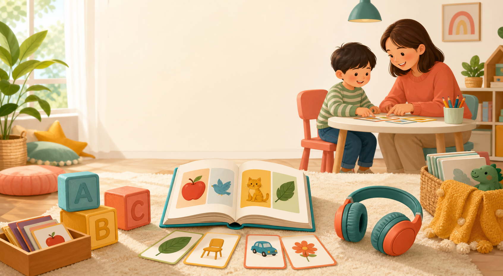

闪卡 8 张
先听再做动作：touch, give me, open, close。

Daily rhythm
先听再做动作：touch, give me, open, close。
只抓一个句型，不背单词，不纠错发音。
选同主题官方入口，让输入轻松重复。
用 yes/no、where is、what is it 收尾。
Tap and listen
孩子点英文卡片，浏览器会朗读；适合第一阶段每天热身。
Roadmap
按照资料目录整理：从闪卡听懂，到牛津树主线和自然拼读前技能。
核心 200 名词 + 动词词组
材料：时光学名词卡、阿布巴布动词卡、SSS 免费闪卡。
动画：SSS 指令式儿歌、Yakka Dee。
每天 8-12 张卡，做 touch / give me / put / open / close / jump / run。
5 个词以下短句，约 300 听力词汇
材料：培生词汇妙趣屋、大猫预备级、培生启明星一级、学乐 A。
动画：Little Pim、小羊提米、Didi's Day。
每本只抓 1 个句型，用 yes/no、where is、what is it 做亲子对话。
5 个词左右句子，300-500 听力词汇
材料：海尼曼 GK70 A、大猫 1-2、培生启明星 2、学乐 B。
动画：Wow English、小 P 优优、恐龙伙伴、汽车小镇。
读 animals 就配动物闪卡和动画，用同一主题重复 5-7 天。
7 个词左右句子，约 500 听力词汇
材料：海尼曼 GK70 B、大猫 2-3、培生启明星 3、牛津树 1。
动画：小鼠波波、Max and Ruby、小兔乒乓、小老虎丹尼尔。
允许孩子用单词或短语回答，重点是理解和愿意互动。
10 个词左右句子，500-800 听力词汇
材料：海尼曼 GK70 C、大猫 3-4、牛津树 2、学乐 D-E。
动画：Peter Rabbit、小狐狸二级、Meg and Mog、Pip and Posy。
用排序图片、who / where / what happened 做复述前准备。
10 个词以上长句，约 1000 听力词汇
材料：牛津树 3-5、大猫 5-6、培生 5-6、学乐 F-I。
动画：Muzzy、Hey Duggee、Meg and Mog、小狐狸第三级。
引入自然拼读和自主阅读前技能，继续保留亲子共读。
Printable library
从官方可保存 PDF 中挑出低龄最常用主题，适合打印、裁剪、塑封。
Hello. Bye-bye. How are you?
打开官方页Open, shut, big, small, fast, slow.
打开官方页Count, clap, jump and touch.
打开官方页What is it? It is a cat.
打开官方页Sunny, rainy, windy, snowy.
打开官方页Circle, square, triangle, star.
打开官方页Touch your head. Touch your toes.
打开官方页Put on your shoes. Let's go.
打开官方页Official resources
分级读物和动画全集大多有版权限制，网站只放官方入口和已明确免费的资料。
Parent notes
每天 15-25 分钟即可：闪卡/绘本 10-15 分钟 + 动画 5-10 分钟。
3 岁阶段优先听懂、愿意互动，不要求背单词、拼写或考试。
同一主题重复 5-7 天，比每天换材料更有效。
采购优先级：先买主线分级，动画用官方平台补输入。